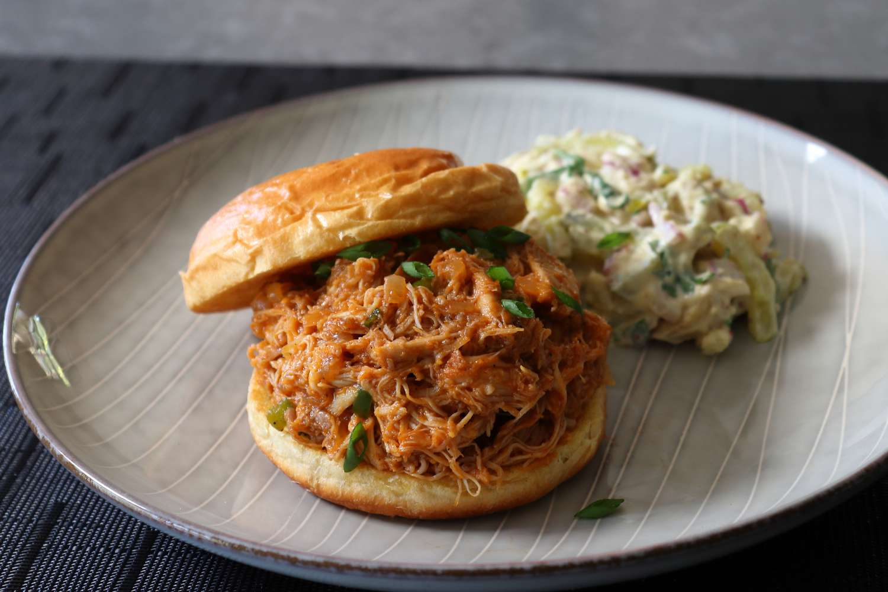

Pulled Chicken Sloppy Joes (Sloppy Chickens)

Chicken Sloppy Joes are a twist on the classic Sloppy Joe, made with ground
chicken instead of beef. The dish features a savory, slightly sweet tomato-based
sauce, often including ingredients like ketchup, Worcestershire sauce, mustard,
and seasonings. Served on a soft hamburger bun, Chicken Sloppy Joes are a
lighter yet flavorful comfort food option, perfect for quick and easy meals.
Ingredients
- 1 tablespoon vegetable oil
- 4 cloves garlic, minced
- ½ large yellow onion, diced
- 1 tablespoon brown sugar, or to taste
- 2 teaspoons kosher salt, or to taste
- 1 teaspoon ground black pepper
- 1 pinch cayenne pepper, or to taste
- 2 pounds boneless, skinless chicken thighs
- ¾cup ketchup
- 1 tablespoon Dijon mustard
- ½teaspoon Worcestershire sauce
- 1 tablespoon hot sauce, or to taste
- 1 cup water
- 2 tablespoons thinly sliced green onions
- ½cup diced jalapeño pepper
- 4 medium hamburger buns - split, toasted and buttered
Steps
- Add vegetable oil to a saucepan, and then add (in this order) garlic, yellow
onion, brown sugar, kosher salt, black pepper, cayenne, chicken thighs,
ketchup, Dijon mustard, Worcestershire sauce, and hot sauce.
-
Place over high heat and wait until you can hear the garlic sizzling in the bottom
of the pan, about 30 seconds. Let garlic sizzle for about 30 seconds before
adding the water. Stir everything together and wait for the mixture to boil.
-
Reduce heat to medium-low and simmer, uncovered, until the chicken falls apart,
about 1 ½ hours.
-
Stir in the green onions and peppers and cook until the peppers just turn tender,
3 to 5 minutes more. Taste for seasoning.
-
Remove from heat and serve on toasted hamburger buns.
Home